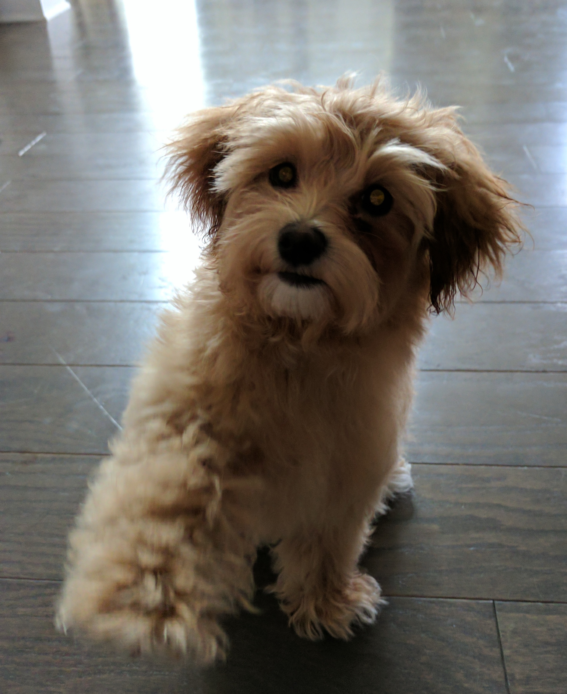

Been in the networking industry for the past 8 or so years. Currently focusing on Ansible network automation and helping customers and the community with their journey of network automation.
###Some other things about me
###Some ways to get a hold of me
###My repo GitHub.
Thanks for reading!